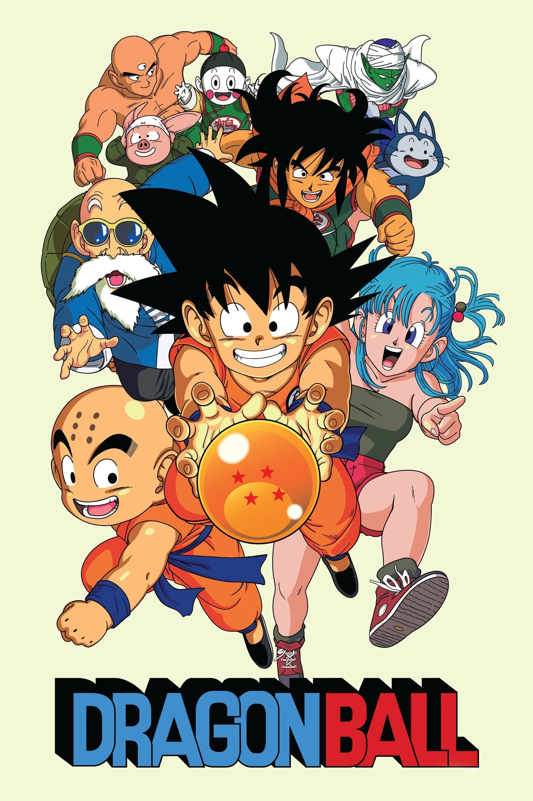
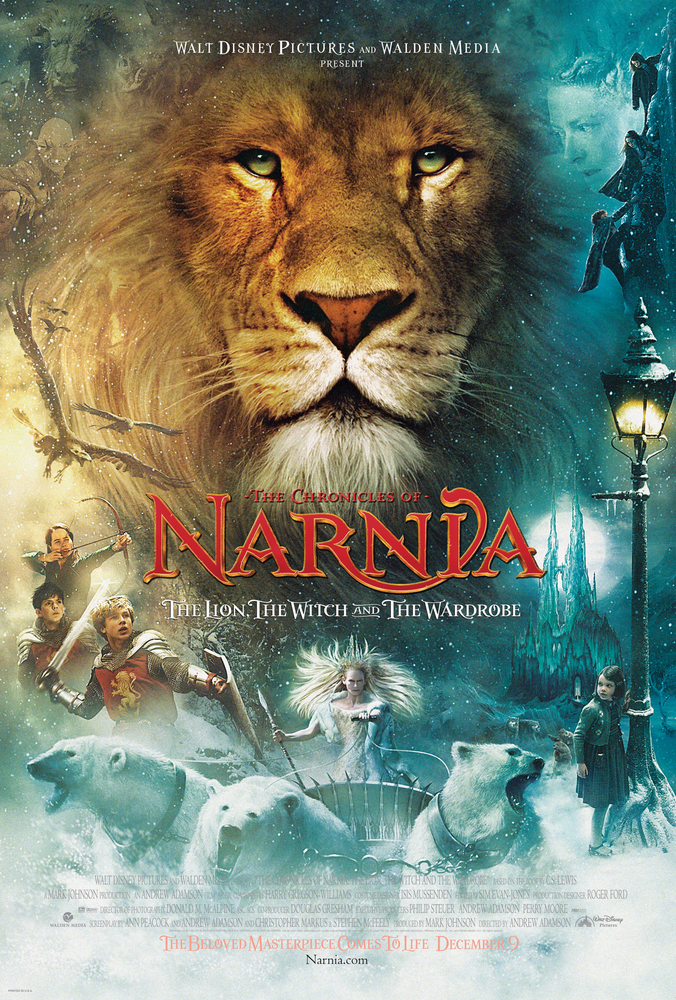
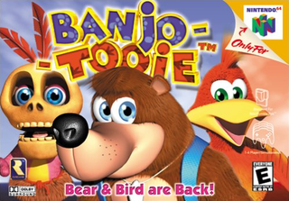
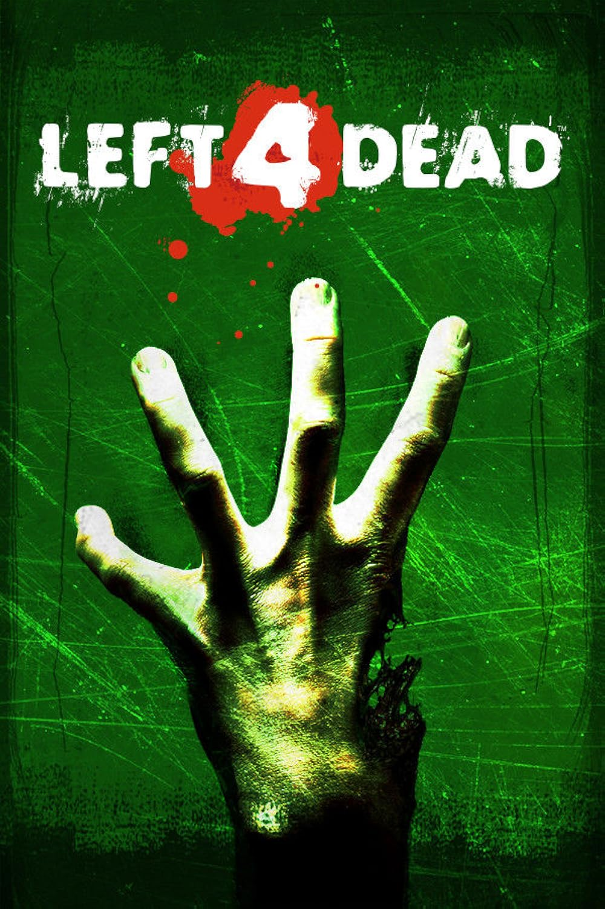

obras favoritas
dragon ball
tipo: anime y manga

sigue las aventuras de Son Goku, un niño experto en artes marciales. La historia comienza cuando conoce a Bulma y juntos buscan las siete "Esferas del Dragón", objetos mágicos que, al ser reunidos, invocan a un dragón capaz de conceder cualquier deseo.
narnia
tipo:pelicula y novela

La historia principal de Las Crónicas de Narnia sigue a cuatro hermanos: Peter, Susan, Edmund y Lucy. Durante los bombardeos de la Segunda Guerra Mundial, se trasladan a la casa de un viejo profesor. Jugando al escondite, descubren que el fondo de un armario mágico conduce a un mundo fantástico llamado Narnia
breaking bad
tipo: serie de tv

narra la historia de Walter White, un frustrado profesor de química al que le diagnostican un cáncer de pulmón terminal. Para asegurar el futuro financiero de su familia antes de morir, se asocia con Jesse Pinkman, un exalumno suyo, para cocinar y vender metanfetamina de gran pureza, lo que lo introduce en un peligroso mundo criminal.
juegos favoritos
Crash team racing
tipo: carreras y online

La historia sigue a Crash Bandicoot y a sus aliados, quienes deben competir en un torneo de karts contra el malvado alienígena Nitros Oxide. El extraterrestre amenaza con destruir la Tierra a menos que el mejor corredor del planeta lo derrote en una carrera definitiva, forzando a héroes y villanos a unir fuerzas
Banjo-tooie
tipo: plataformas, acción y aventura en 3D

La historia transcurre dos años después de que el oso y el pájaro derrotaran a la bruja Gruntilda, dejándola aplastada bajo una roca. Dos brujas hermanas llegan en una excavadora gigante para rescatarla y juntas traman un plan para robar la fuerza vital de los habitantes de la Isla Canto de Oso, buscando absorberla para que Gruntilda recupere su cuerpo original completo y así vengarse de los protagonistas. Banjo y Kazooie deben embarcarse en una aventura a través de 8 extensos mundos no lineales y mazmorras para detener el arma de destrucción masiva de las brujas y rescatar la isla
left 4 dead
tipo:disparos en primera persona (FPS) de acción y terror cooperativo

se desarrolla tras un apocalipsis causado por la "Gripe Verde". La historia sigue a cuatro supervivientes inmunes (Bill, Francis, Louis y Zoey) mientras luchan contra hordas de infectados. Su objetivo principal es atravesar distintas zonas infestadas para llegar a refugios y vehículos militares de rescate.
platos favoritos
| comida | postres |
|---|---|
| lomo saltado | mazamorra |
| causa | arroz con leche |
| papa a la huancaina | picarones |
| pupusas | pay de manzana |
| chaufa | waitan frito |